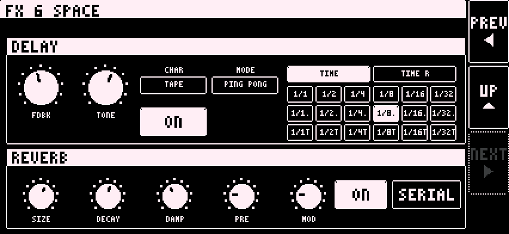
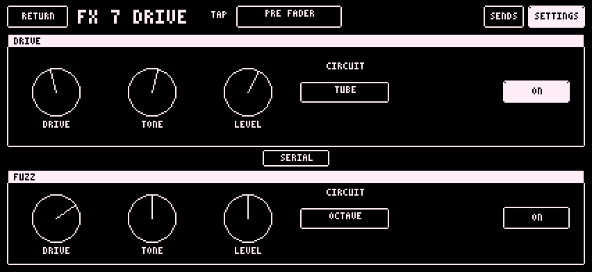
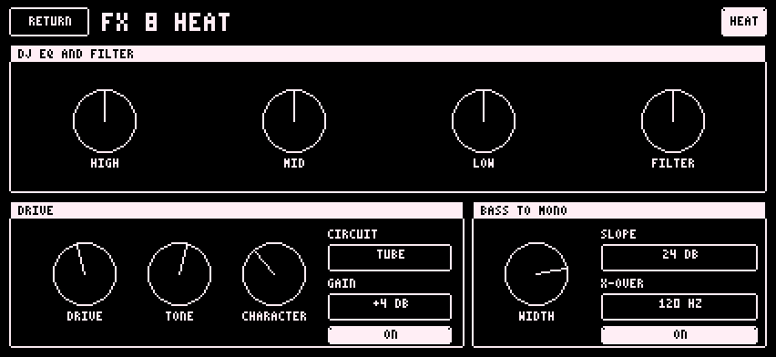

SPACE, DRIVE and HEAT are effects on channels 14 to 16. Tap the box on the main page to open it. Each part sends to SPACE and DRIVE. HEAT sits on the whole mix.
Delay and reverb. The delay follows the Digitakt tempo.


